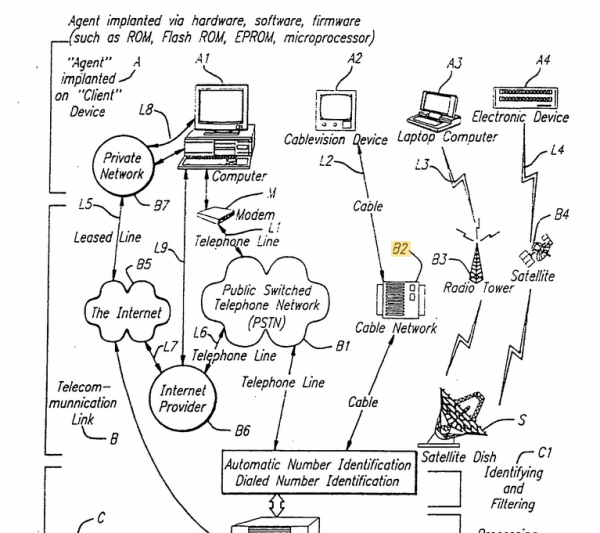

Команди до постійного агента можуть передаватися через мережу SS7, imho..
Саєнтологія в Україні дуже «любить» вас, отримавши доступ до поліцейських/армійських можливостей спілкуватися з вбудованим агентом, вони переписують деякі частини прошивки в пам’яті або на PCI-пристроях і створюють постійний скріншінг для всієї місцевої частини культу. Я думаю, це послідовна радіоконсоль для Management Engine (у житті я бачу та використовую на роботі лише веб-панель від AMT), методи доступу, описані в цьому патенті. Перелік технологій безпеки Intel ( цю інформацію я знайшов на веб-ресурсах про безпеку прошивки ):
- Intel Security Security Engine, aka Management Engine (ME)
- Intel Boot Guard
- Intel Trusted Execution Technology (TXT)
- Intel Software Guard Extensions (SGX)
- Intel Identity Protection Technology (IPT)
- Intel Active Management Technology (AMT)
- TCG’s TPM
- Intel Virtualization Technology
- Intel Anti-Theft Technology
- Intel management engine BIOS extension (MEBX)
- Host-Embedded Controller Interface (HECI)
- Intel EPID (розширена ідентифікація конфіденційності)
- Intel PAVP (захищений шлях аудіо та відео)
- Intel Platform Trust Technology (PTT)
«Розділ флеш-пам’яті SPI зарезервовано для зберігання енергонезалежних даних механізму безпеки та керування. Оскільки розмір флеш-пам’яті дуже обмежений, файли не можуть бути занадто великими. Загалом сховище призначене для ключів і облікових даних, таких як закриті ключі пристрою, паролі AMT тощо. Він не призначений для зберігання масових даних, таких як відеокадри або мережевий трафік».
Двигун містить динамічний запуск програм (DAL). Одне, що мені спало на думку про ME, це те, що він запускає код Java із жорсткого диска! Витративши багато часу на пояснення, чому ME ізольований і захищений від стороннього коду, автор згадує про два обмеження ME: недостатньо місця у Flash для інших програм на основі ME та нездатність третіх сторін використовувати ME.
«Щоб певною мірою усунути ці недоліки, новіші версії мікропрограми механізму безпеки та керування включають модуль під назвою Dynamic Application Loader, або скорочено DAL. Як вказано з назви, DAL дозволяє двигуну динамічно завантажувати та виконувати Java-аплети під час виконання. Аплети зберігаються не на флеш-пам’яті, а на жорсткому диску хоста. З DAL вбудований механізм більше не є закритою сферою. Двигун тепер відкритий для більшої гнучкості та можливостей для вивчення».
«DAL — це, по суті, віртуальна машина Java, яка забезпечує роботу Java-аплетів у мікропрограмному середовищі механізму безпеки та керування. Java-аплети в байт-коді реалізують свої розроблені функції, які можуть бути виконані в мікропрограмі».
«Залежно від продукту IPT може бути реалізовано як аплет для функції DAL двигуна або вбудований модуль мікропрограми на двигуні. Якщо прошивка підтримує DAL, наприклад, на більшості моделей Intel Ultrabook, тоді реалізація IPT буде поширена в аплеті Java. На деяких смартфонах та інших продуктах, де DAL не вбудовано в мікропрограму механізму, IPT буде вбудованим компонентом мікропрограми, який завантажується з системного флеш-чіпа. Конструкція мікропрограми та функції компонента IPT ідентичні для обох варіантів».
І весь цей набір реалізовано для потреб ІТ-бізнесу.

І коли кіберзлочинці отримують цей доступ, вони можуть дуже швидко знайти можливість будь-коли переписати деякі частини мікропрограми машини та можуть створити для себе нові бездротові та кабельні з’єднання, віддалений бездротовий доступ до веб-камери, екрана, жорсткого диска, пам’яті тощо.
Але в деяких компʼютерах є одна погана річ – Поліцейський доступ, ще жодного разу в житті не бачив щоб він використовувався не для піратства інформації:

Research about this:
https://www.blackhat.com/docs/us-14/materials/us-14-Kamluk-Computrace-Backdoor-Revisited-WP.pdf
https://ebrary.net/24869/computer_science/secure_technology https://freundschafter.com/research/about-amd-trustzone-amd-platform-security-processor-psp-amd-secure-technology/ https://www.phoronix.com/news/AMDGPU-Secure-Display-Patches